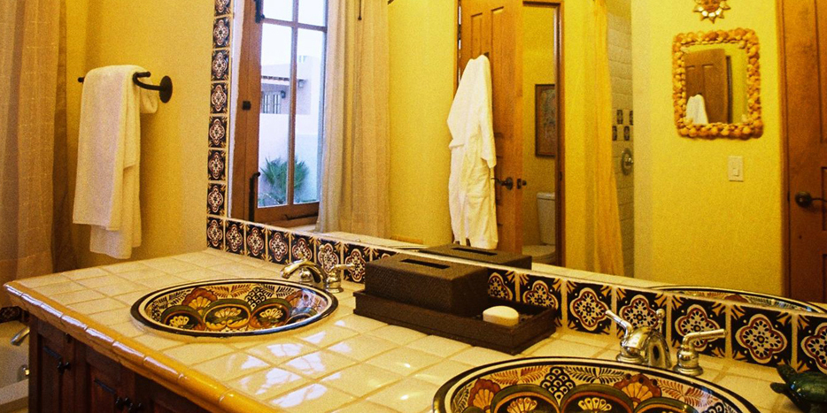
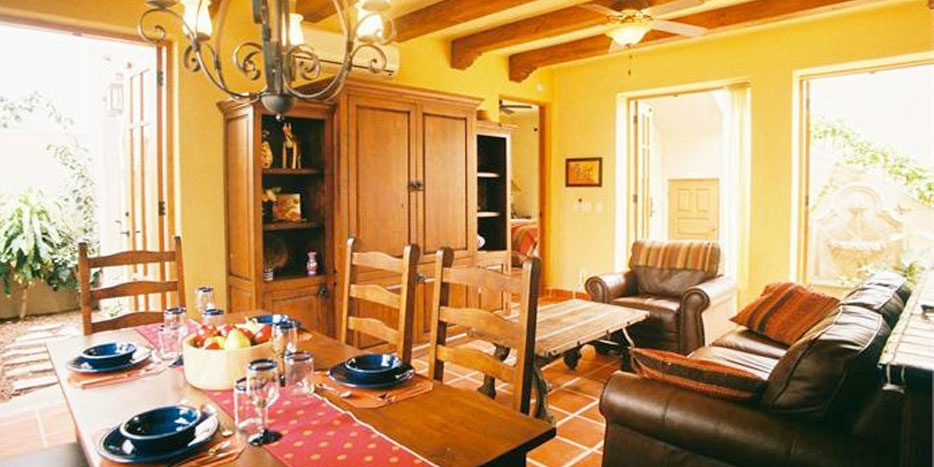
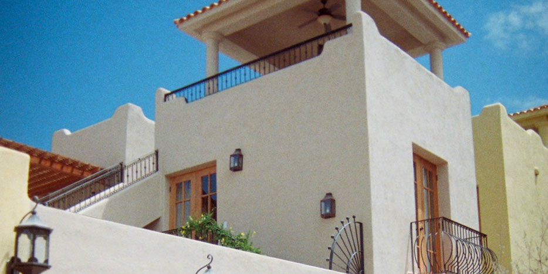
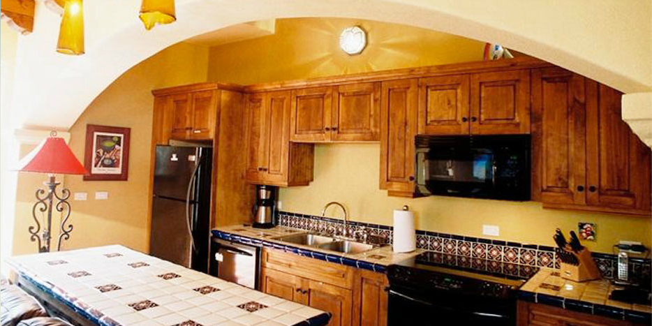
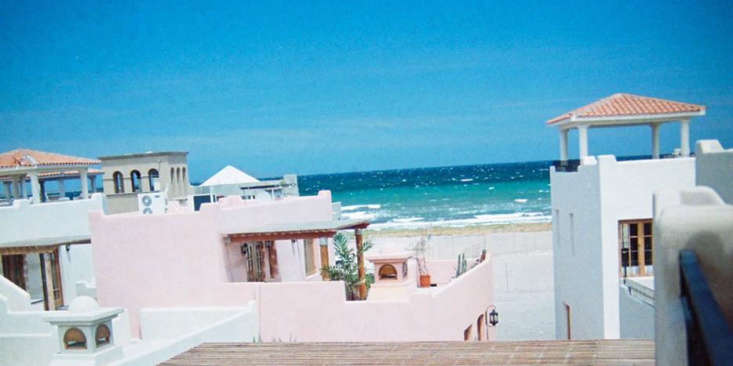
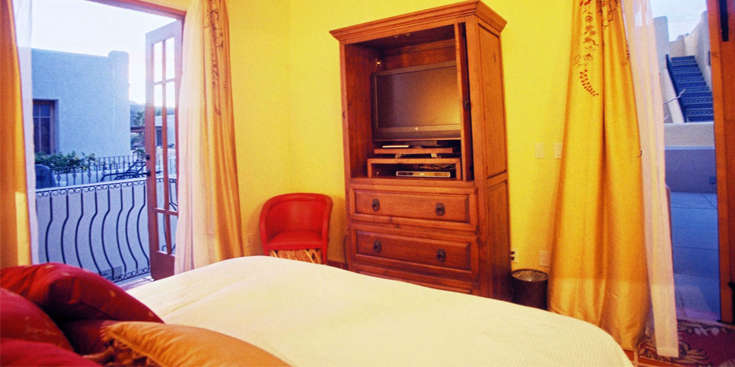
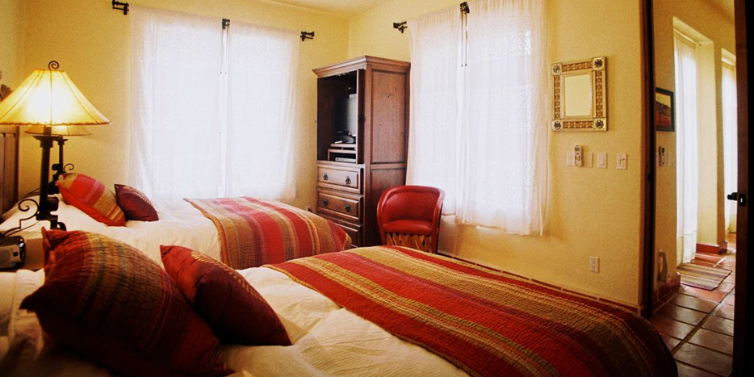

Loreto is a unique authentic charming town, and the Villages of Loreto Bay still feels like a secret!
Accommodations & Amenities
2 Bedroom, 2 Bath Villa that accommodates 6.
Sunny Seadside Escape with a great location, just steps from the BEST swimmable beach in Loreto Bay, on a private 3 mile long beach with no beach vendors!
Enjoy, within a short walk, all the amenities of the Loreto Bay Inn. Including a swim up bar, pool and hot tub, palapas, full service spa, restaurants, kayak rental shop, gift shop, concierge, and more all along the beach!
Come stay, relax, read a book under the palapas, and have drinks or food delivered! Loreto Bay still feels like a secret. Come visit the authentic historical charming town.
Enter this NEW seaside villa through arched glass french doors, walk pass outdoor open air garden , hear the stunning water feature smell the gardenias to enter this 1500 square feet, 2 bedroom 2 bath Mexican Villa with a third story viewing tower. Walk down the beach to the Inn at Loreto Bay and enjoy 4 star amenities, pools, palapas, restaurants ( yummy nachos and margaritas), spa, swim up bar, kayak rentals, and the famous Mexican hospitality .
Built in 2008 with all the upgraded amenities of home with A/C and WIFi . Enjoy a state of the art kitchen with all new appliances, dishwasher and housewares. Laundry room too!
The upstairs Master bedroom has upgraded custom furniture a beautiful comfortable King Pillow top bed with down pillows and comforter and a 36" flat screen TV with DVD player, ceiling fan and A/C . The large master bath has two hand painted sinks a separate soaking tub with views of the Sea and a Mexican tile shower and a private toilet room. Blow dryer, lighted makeup mirror.
The 2nd bedroom downstairs is large and has TWO comfortable queen beds with down pillows and comforters with a 36" flat screen TV with DVD player. It also enjoys two beautiful hand painted sinks and a shower and a private toilet room.
The living room has a leather couch and chair with ottoman and a 42" LCD flat screen with DVD player . Free Wi-Fi for weekly rentals. 6 chairs fit around a mesquite wood dining table enjoy views of the private garden courtyard and ocean breeze.
For your entertaining upstairs the patio has a built in barbeque with a sink with gorgeous vies of the Mountains and Ocean. Go up one more level and your on the 3rd story viewing tower and drink coffee and watch the sunrise over the Ocean or drink margaritas and watch the beautiful sunrise over the Mountains. Loreto " Where the mountains come to swim".
Steps from the ocean you can walk and collect shells, sun bathe , read books, relax, under The Loreto Bay Inns palapas, snorkel , kayak, eat breakfast, lunch and dinner at restaurants at The Inn on the private 2 mile sandy beach. 2 pool areas to choose from.
Getting There
Fly Into LTO Loretos International airport and your 8 minutes from the villa. I recommend renting a car since there is so much to see just 15 minutes up and down the coast. Its 15 minutes from downtown where you can enjoy the historical authentic town and many restaurants. Loreto has the oldest Mission in baja and its still a working mission... Enjoy sunday mass like a local. Right across the street enjoy a fresh hand squeezed juice from the juice bar. LOTS of shopping too.
I would love to help you with ideas for your travel plans... Dining options, adventures and tours. Lots to do from jet skiing to ATVing to deep sea fishing to whale watching and much more!
• Four star Loreto Bay Inn and all of it's amenities. Including beach front pool / hot tub with swim up bar and full service dining. Restaurants, full service spa, Beach front Kayak, windsurfing rental shack, 18 hole beach front golf course, a 2nd gorgeous homeowner pool / hot tub area.
• All within a short walking distance.
• 24/7 on site security office with 2 full time guards.
• On site convenient sundries store.
• All this and tennis courts too!
Photo Gallery






